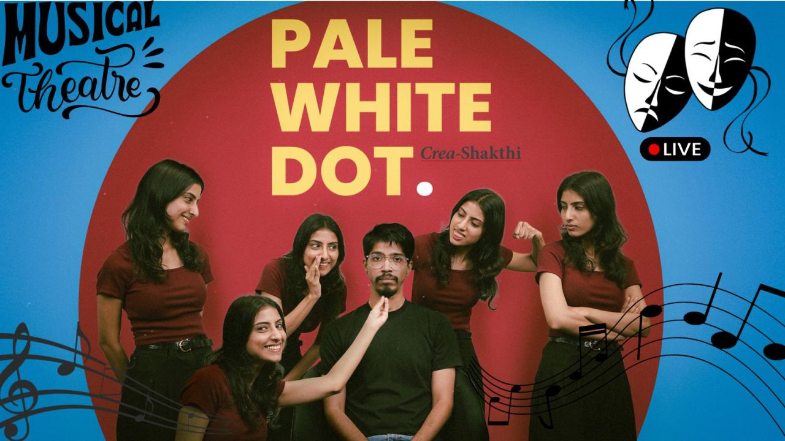

Pale White Dot
Music, Performances
Sun, 1 Feb, 5:30 PM
Mylapore Fine Arts Club, Chennai
₹400
Pale White Dot is an original musical dramedy by Crea-Shakthi set in contemporary urban India,
following Ram and Lakshmi, a young couple navigating love, ambition, and societal expectations.
As they prepare for the next step in their marriage, everyday routines, family pressures, and
unspoken fears begin to surface, especially after the mysterious arrival of the “Pale White Dot.”
What starts as small disagreements about work, money, and boundaries gradually grows into deeper
self-doubt and uncertainty. Through music that emerges from ordinary moments, the story captures
the emotional complexities of modern relationships and urban life, asking whether the couple can
move forward together or remain caught in constant catch-up with themselves and the world around
them.
Language : English
Duration : 1 hr 45 mins
Tickets Needed For 12 yrs & above
Mylapore Fine Arts Club
45, Musiri Subramaniam Rd, Kattukoil Garden, Mylapore, Chennai, Tamil Nadu
600004, India